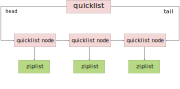

redis 学习笔记
文章目录
5 种基本数据结构
访问数据都是 K-V 形式，所以这里说的数据类型都是说值的类型。然而运行时 key 是可变的，所谓的 string 用起来更像 map，所谓的 hash 类型用起来更像双层的 map。
所以如果用代码调用 redis，可以是这样：
let key: string = `user:name:1234`
redis[key] = 'Jack' // set user:name:1234 Jack
let userName: string = redis[key] // get user:name:1234
key = `user:1234`
redis[key] = {name: 'Jack'} // hset user:1234 name Jack
userName = redis[key].name // hget user:1234 name
而绝对不能是这样：
let userName1234: string = 'Jack' // set user:name:1234 Jack
let userName: string = userName1234 // get user:name:1234
type hash = Record<string, string>
let user1234: hash = {name: 'Jack'} // hset user:1234 name Jack
userName = user1234.name // hget user:1234 name
string
string 是变长的，会预先分配 capacity，最大长度 512M。
> set name Jack
OK
> get name
"Jack"
> del name
(integer) 1 # 1: succeed
> get name
(nil)
> set name Jack
OK
> expire name 60 # 60s
(integer) 1
> ttl name
(integer) 50 # 50s to live，-1: hasn't set expire, -2: value not exist
分布式锁
set 命令提供的语意 func(key1 string, key2 string, expireInMilliseconds number, ifNotExist boolean) boolean可以用来实现分布式锁：
> set lock:user:123 xx-random-123 px 10000 nx # 设置 10s 失效时间
OK
> set lock:user:123 xx-random-123 px 10000 nx
(nil) # 如果 key 已存在，不更新
> ttl lock:user:123
(integer) 7
整个指令是原子的，保证了加锁安全，超时失效保证了分布式场景下不发生死锁。
随机数 value 是为了支持释放锁安全，释放锁需要使用 deleteIfValueEqual 语意，遗憾的是 redis 没有提供这样的原子命令，需要使用 Lua 脚本实现：
if redis.call("get",KEYS[1]) == ARGV[1] then
return redis.call("del",KEYS[1])
else
return 0
end
这种方式只能针对单实例的 redis，如果 redis 变成主从结构，由于 redis 主从同步通常是异步的，锁不再安全。对于 redis 集群，我们可以使用 Redlock 算法，只有从超过一半的节点成功设置 key 才算加锁成功。
list
实现采用双向链表，所以优先使用 push/pop，少用下标访问。
元素较少时使用 ziplist，一块连续的内存存储；元素教多时使用 quicklist，即将多个 ziplist 连起来的链表。这样避免了多个 next/pre 指针对内存的消耗。

> rpush myList aaa
(integer) 1 # ["aaa"]
> rpush myList bbb ccc ddd
(integer) 4 # ["aaa", "bbb", "ccc", "ddd"]
> lpush myList xxx yyy
(integer) 6 # ["yyy", "xxx", "aaa", "bbb", "ccc", "ddd"]
> lpop myList
"yyy"
> lpop myList
"xxx"
> lpop myList
"aaa"
> llen myList
(integer) 3
> lindex myList 1 # 从 0 开始
"ccc"
> lrange myList 0 0 # [left, right]
1) "bbb"
> lrange myList 0 -1
1) "bbb"
2) "ccc"
3) "ddd"
> lset myList 1 ccc2 # 修改元素
OK
> lrange myList 0 -1
1) "bbb"
2) "ccc2"
3) "ddd"
> lrem myList 1 ccc2 # 删除值为指定值的前 count 个元素
(integer) 1
hash
无序字典，实现采用数组+链表，hash 到数组发生碰撞时使用链表。值只能是字符串。rehash 是渐进式的，保留新旧两个 hash 结构，查询时会同时查询两个 hash 结构，直到最后将旧 hash 的内容都迁移到新的 hash 结构中才会删除旧 hash。
> hset myHash k1 v1
(integer) 1
> hset myHash k2 v2 k3 v3 # 单次设置多个 key
(integer) 2
> hget myHash k1
"v1"
> hmget myHash k1 k2
1) "v1"
2) "v2"
> hgetall myHash
1) "k1"
2) "v1"
3) "k2"
4) "v2"
5) "k3"
6) "v3"
> hkeys myHash
1) "k1"
2) "k2"
3) "k3"
> hvals myHash
1) "v1"
2) "v2"
3) "v3"
> hdel myHash k1 k3 # 支持同时删除多个 key
(integer) 2
set
无序集合，实现和 hash 一样，只不过 value 都是 null。
> sadd mySet v1 v2 v3
(integer) 3
> smembers mySet
1) "v1"
2) "v3"
3) "v2"
> scard mySet # 查看集合大小
(integer) 3
> srandmember mySet 2 # 随机获取 2 个元素，默认为1，超过集合大小只返回全部元素
"v3"
> srem mySet v1 v2
(integer) 2
> spop mySet # 随机删除一个元素
"v3"
zset
加权 Set，按照权重 score 排序。实现采用 hash + skiplist。
zset 支持的是 (key, score, idx) 三元组的互相访问，首先是个有序 Map，元素顺序是 score 从小到大的顺序，其次支持根据 score/idx 范围取 key。
- 根据 key 访问，用 hash 实现
- 根据 score 访问，用 skiplist 实现
- zrangebyscore：
func(minScore, maxScore) []<key,score>
- zrangebyscore：
- 根据 idx 访问，用稍加修改的 skiplist 来实现
> zadd myZset 1 v1
(integer) 1
> zadd myZset 2 v2
(integer) 1
> zadd myZset 3 v3
(integer) 1
> zrange myZset 0 -1 # 按 score 顺序输出
1) "v1"
2) "v2"
3) "v3"
> zrevrange myZset 0 -1 # 按 score 逆序输出
1) "v3"
2) "v2"
3) "v1"
> zcard myZset # len(myZset)
(integer) 3
> zadd myZset 4.44 v4
(integer) 1
> zscore myZset v4 # 根据 key 获取 score
"4.4400000000000004"
> zrank myZset v4 # 获取 key 对应的排名，从 0 开始计算
(integer) 3
> zrangebyscore myZset 1 2 # 根据 score 闭区间获取 key
1) "v1"
2) "v2"
> zrangebyscore myZset -inf 3 withscores # 遍历(-∞, 8.91]返回 key 和 score
1) "v1"
2) "1"
3) "v2"
4) "2"
5) "v3"
6) "3"
> zrem myZset v2 # 删除 key
(integer) 1
> zrange myZset 0 -1
1) "v1"
2) "v3"
3) "v4"
skiplist
zset 支持随机写入，所以不能用数组。随机写入可以考虑用链表，但是如何确认从哪个节点写入呢？可以使用 skiplist，其查找在哪个节点写入的过程类似二分查找。
skiplist 结构很好理解，就是多条链表组合起来：
- 所有节点按照 score 大小组成一条单向链表，称之为第1层链表
- 维持第1层链表结构不变，从中随机挑选50%节点，这些节点组成一条新的单向链表，称之为第2层链表
- 维持第2层链表结构不变，从中随机挑选50%节点，这些节点组成一条新的单向链表，称之为第3层链表
- 以此类推，直到我们设定的最大一层，例如 redis 中是64层
这样最后会组成这样一个结构：
需要注意的是图中“节点35”看似有多个，其实只有一个，在内存中也只有一个地址，只不过它隶属多个链表。
假设现在要插入“节点80”，查找插入位置就和寄快递一样：
- 先查国家（第5层链表），发现 80 > 60，所以 insertAt ∈ (80, TAIL)
- 再查省市（第4层链表），发现 80 > 60，所以 insertAt ∈ (80, TAIL)
- 再查区（第3层链表），发现 80 < 91，所以 insertAt ∈ (80, 91)
- 再查街道（第2层链表），发现 80 > 75，所以 insertAt ∈ (75, 91)
- 再查门牌号码（第1层链表），发现 80 < 83，所以 insertAt ∈ (75, 83)，也就是插入到“节点75”后面
找到插入位置，如何确定“节点80”属于几层链表呢？这里还是采用相同方式，首先新节点必然属于第一层，然后每想晋升1层，都要抛一下硬币，通过才能晋升，只要晋升成功就可以一直晋升，直到晋升失败或者晋升到最高层为止。插入新节点并不影响旧节点的层数，只需要将前后节点的指针重新指向一下就行了，可以看到统计上插入性能不依赖节点插入顺序。
理解了 skiplist 的原理后，我们可以去 leetcode 设计跳跃表问题 实现一下过把瘾了，毕竟有人提前帮你写好了单元测试了😉
skiplist 插入的平均复杂度是 O(log n)，详细的推导过程可以参考论文 Skip Lists: A Probabilistic Alternative to Balanced Trees。
redis 中实现的 skiplist 稍微有些区别，例如上面我们一直把晋升概率设置为50%，redis 中采用的是25%；redis 中 skiplist 维护了每个节点和上个节点的距离，用来实现 zrank，该命令的时间复杂度也是 O(log n)；此外第1层链表是双向链表，用来实现反向遍历。
持久化
RDB
- 支持将当前内存中数据 dump 到硬盘中为 dump.rdb 文件，可以使用 redis-rdb-tools 查看其中内容
- 支持指定时间间隔定期保存 snapshot
- 保存 RDB 文件时会 fork 一个子进程，IO 操作全在子进程内做，由 linux 的写时复制（copy-on-write）机制保证数据是 save 命令那一刻的数据
- 与 AOF，恢复大量数据时，RDB 方式更快
- 由于是定期保存，所以 RDB 方式可能丢失最近几分钟数据
AOF（Append Only File）
- AOF 日志中是 reids 服务器按顺序的所有写操作指令录制。
- 每条写操作指令会被追加到
aof_buf中，默认每隔1s执行一次fsync将数据写入 AOF 文件，崩溃后最多丢失1s的数据。
混合持久化
redis 4.0 以后支持了 RDB 和增量 AOF 文件存在一起，久远历史数据存 RDB，最近数据用存 AOF。
key 过期策略
redis 有2种方式让删除过期 key：定期删除和惰性删除。
redis 会定期（每秒10次）扫描删除过期的 key
- 随机取 20 个 key
- 删除 20 个 key 中过期的 key
- 如果这 20 个 key 中过期 key 占比 > 25%（5 个），那么重复步骤 1
有了这个策略，通常不会有超过 25% 的过期 key。同时为了防止过度占用 cpu，限制单次扫描时间不超过 25ms。如果同时有大量 key 同时过期，大量 key 同时回收会导致处理读写请求有延迟。所以如果有大批量 key 过期，要给过期时间一个随机范围，不要都在同一个时间内过期。
同时为了保证准确，还有惰性删除，访问 key 时检查 key 是否过期需要删除。
当某个 key 通过上述策略被删除时，redis 会同时向 AOF 中加入一条 del 语句。
可观测性
info 命令
info 命令可以帮助我们了解 redis 服务器的运行状态。
# operations per second，每秒多少次指令
$ redis-cli info stats | grep ops
instantaneous_ops_per_sec:789
# 当前连接的客户端数
$ redis-cli info clients | grep connect
connected_clients:2
# 内存占用
$ redis-cli info memory | grep used | grep human
used_memory_human:841.13K # 内存分配器 (jemalloc) 从操作系统分配的内存总量
used_memory_rss_human:3.90M # 操作系统看到的内存占用，top 命令看到的内存
used_memory_peak_human:842.16K # redis 内存消耗的峰值
used_memory_lua_human:37.00K # lua 脚本引擎占用的内存大小
# 主从复制的积压缓冲区大小
$ redis-cli info replication | grep backlog
repl_backlog_active:0
repl_backlog_size:1048576 # 积压缓冲区大小
repl_backlog_first_byte_offset:0
repl_backlog_histlen:0https://github.com/sripathikrishnan/redis-rdb-tools
slowlog
redis 记录了执行时间超过给定时长的命令请求。 redis 提供了2个配置：
slowlog-log-slower-than：命令执行时间（不包括排队时间）超过该时间时会被记录下来，单位为微秒。slowlog-max-len：可以记录的慢查询命令的总数。
通过 slowlog 命令可以查看慢查询：
> slowlog get 2
1) 1) (integer) 14 # 慢查询自增 id
2) (integer) 1309448221 # 慢查询执行 unix 时间
3) (integer) 15 # 耗时微秒
4) 1) "ping"
2) 1) (integer) 13
2) (integer) 1309448128
3) (integer) 30
4) 1) "slowlog"
2) "get"
3) "100"
> slowlog reset # 清空慢查询
latency
这里的 latency 指客户端的，通过 –latency 可以查看客户端延迟。
$ redis-cli --latency
min: 0, max: 1, avg: 0.19 (187 samples)
关于如何排查高 latency 可以参考 Redis latency problems troubleshooting，这里有中文版。